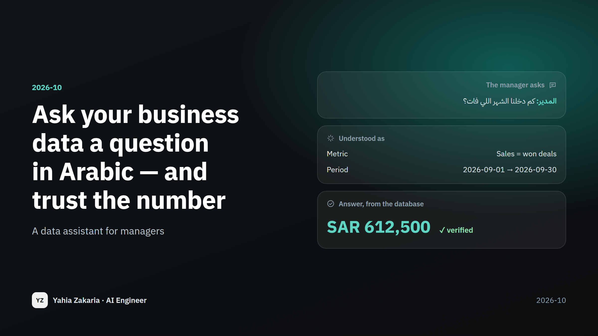

Ask your business data a question in Arabic — and trust the number
A data assistant for managers — ask in Saudi dialect or formal Arabic, get the number, the chart and the query behind it, and a question back when yours is unclear.
- My role
- Designed and built it end to end — the business definitions, the assistant, a 200-question Arabic exam, and a check against a production database schema.

97.6%
of verified answers correct
200 Arabic questions it never saw while being built
10 / 10
unclear questions answered with a question, not a guess
2 sec
typical time to answer
< 0.1¢
cost per question
about $0.0003
The problem
A manager has a question — how much did we sell last month, which agent is slowest to reply, how many follow-ups are overdue. The dashboard answers the questions someone thought of last quarter, not today's. So the question goes to an analyst and waits a day or two. The new AI tools that "talk to your database" are fast, but they have a quiet flaw: they write a query that runs, return a number that looks right, and sometimes it isn't — revenue counted twice, cancelled deals included, the chat bot ranked as the best employee. Nobody notices until a decision has been made on it.
How it works
Step 1 / 5
Ask
Type the question the way you'd say it — Saudi dialect, formal Arabic, even with spelling mistakes.
Step 2 / 5
Understand
The AI works out what you're asking for — which number, which period, which agent or destination — and nothing else. It never invents a number.
Step 3 / 5
Use agreed definitions
"Sales", "win rate" and "quality score" are defined once, the way the business means them. Every answer uses the same definition.
Step 4 / 5
Ask back, or decline
If the question is unclear — "best agent" by quality or by sales? — it asks. If it's not about the data, it says so.
Step 5 / 5
Answer with proof
The number comes straight from the database, with a table, a chart, and the exact query behind it for anyone who wants to check.
Results
Frozen test set · October 2026
- 200 Arabic questions — formal, Saudi dialect, misspelled and multi-step — written and locked before the assistant existed, then run once.
- 97.6% of verified answers correct. Every unclear question got a follow-up and every off-topic request was politely declined.
- Same score on a copy of a real production database schema — the same queries run on a live Postgres with no changes.
- A model eight times more expensive scored the same, so the fast, cheap one is the default — chosen by measurement, not by guess.
How this can help your business
Answers in seconds, not days
Managers ask their own questions without waiting for an analyst or a new dashboard.
One version of the truth
Sales means the same thing in every answer, because the definition is written once.
Nothing hidden
Every number comes with the query that produced it, and anything the AI wrote itself is clearly marked.
Companies with a CRM or sales database and managers who ask questions in Arabic — travel, real estate, retail, clinics, call centres.
Good to know
- The demo runs on invented data shaped like a real travel agency's database. Real data will raise questions the definitions don't cover yet — they're added one line at a time.
- For unusual questions the AI writes the query itself; those answers are labelled and were right 10 times out of 12 in the test.
- Tested in Arabic only. English questions work but weren't measured.
Images
Technical detailsFor engineers and recruiters
- Python
- DeepSeek
- Semantic layer
- PostgreSQL
- DuckDB
- sqlglot
- Pydantic
- Streamlit
- Routing like Snowflake Cortex Analyst: a YAML semantic layer (31 metrics, 16 dimensions) the model picks from; verified parameterised queries; free SQL only as a fallback.
- Free SQL is generated three times and answered only when a majority returns the same result; every query passes a read-only guard (single SELECT, known tables).
- Dates and names are resolved in code — Ramadan, "last 3 months", a week that starts on Sunday, "سارا" → the stored "سارة", two agents named Mohammed → a follow-up question.
- Graded by code, not by a model. The same 200 questions were re-run on Postgres 16 built from 27 production migrations, which exposed an ENUM-to-text join the demo had hidden.
Let's talk about your project
Tell me what you're trying to fix or find out. I'll reply with a clear plan: the steps, the timeline, and what it would cost to run.